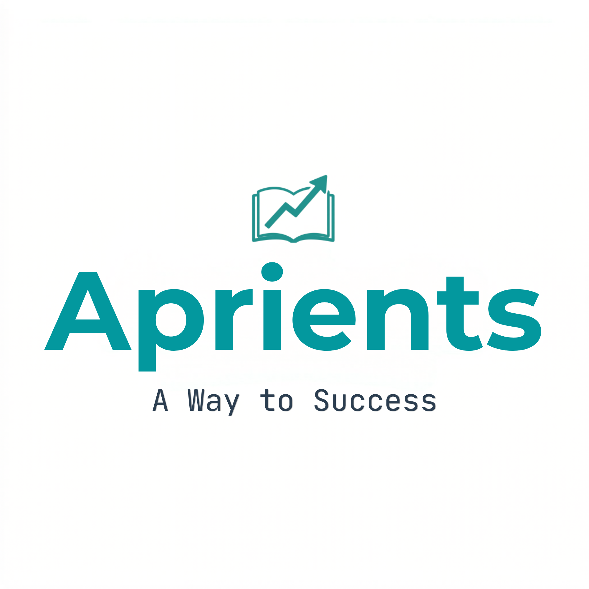

Course:
Chapter:
Prompt will be copied and Gemini will opened in a new tab. Please paste the prompt there to generate your mock test.
Upgrade to Premium to access Notes, Downloads, AI Mocks and more.